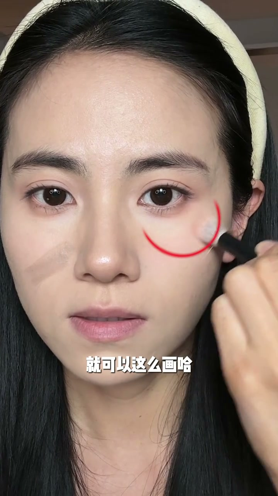
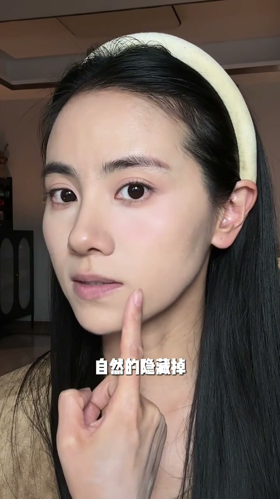

内容要点
[00:00] 有蚊 没蚊
[00:01] 脸一下子年轻10岁
[00:02] 新手这法令蚊
[00:03] 要么就是范围不对
[00:05] 遮了跟没遮一个样
[00:06] 要么就是厚厚一图
[00:07] 全卡在鼻翼两侧
[00:09] 离远看就跟打了补钉一样
[00:10] 怎么才能像博主一样
[00:11] 就遮完了之后又平整又自然呢
[00:13] 老规矩咱们还是从原理
[00:15] 到手法 再到工具
[00:17] 一次先给你讲清楚
[00:18] 这种突凹结合的立体结构
[00:20] 到底怎么遮
[00:20] 先看原理
[00:21] 已经是有请咱们的助教老师
[00:23] 然后用相比拟号来辅助展示
[00:25] 咱们脸上肉肉的位置
[00:27] 正常情况下
[00:28] 咱们整个面中最碰的位置
[00:30] 是应该在苹果机这里
[00:32] 这是最突点
[00:33] 但是到咱们教练流失苹果机
[00:35] 往下掉就变成了这个形态
[00:37] 堆积在鼻翼的旁边
[00:39] 这个阴影就变得更深了
[00:41] 当光线照上去
[00:42] 咱们面部的最突点呢
[00:43] 就从这个位置变到了这个位置
[00:46] 这块肉的下方
[00:48] 就变成了一个背光面
[00:49] 把这个背光面换成黑色
[00:51] 大家看得更直观一些
[00:53] 这样就形成了视觉上
[00:54] 咱们看到的
[00:55] 显老的一道黑黑的法令蚊
[00:57] 咱们想要搞这个法令蚊
[00:58] 你就不能只提亮这黑黑的一道线
[01:01] 还要把下移的这个高光面
[01:03] 从视觉上让它上移
[01:05] 这样才会有饱满真实的感觉
[01:07] 那笼功分三步
[01:08] 第一步
[01:09] 把黑色的阴影凹面
[01:11] 第二步
[01:12] 把白色的凸面
[01:14] 第三步
[01:15] 把最突点
[01:16] 向上移
[01:17] 复位苹果机
[01:18] 那咱们实操
[01:19] 一定要跟着我
[01:20] 用同样的工具和手法一步不折
[01:22] 第一步
[01:23] 把头侧向45度
[01:24] 让光从你的半侧面打过来
[01:26] 咱们就可以很清楚的看到
[01:27] 你自己法令蚊的这个
[01:29] 然后我们用比
[01:30] 肤色亮一号的遮瑕膏
[01:32] 或者是遮瑕液
[01:34] 还有一把这种扁头的遮瑕刷
[01:36] 手法来了
[01:36] 很重要
[01:37] 若是用遮瑕膏
[01:38] 你就用刷子的这个扁面
[01:40] 去占取
[01:41] 放在你的手背上晕一晕
[01:43] 晕到这种状态
[01:44] 若是遮瑕液呢
[01:45] 你就要先把它塗在你的手背上
[01:47] 再用刷子的扁面去占取
[01:49] 然后再精准的上到你这个阴影区内
[01:54] 这些手法好
[01:54] 都是为了让你上脸之后
[01:56] 这粉更薄
[01:57] 而且操作的区域更精准
[01:59] 就一定不要一次性
[02:00] 把大量的粉都堆在法令蚊上
[02:01] 越拍越大
[02:02] 最后把亮面和暗面全部都提亮了
[02:04] 那就相当于没提亮
[02:05] 拿一个这种小小的迷你粉撲
[02:07] 把它对折之后
[02:09] 用折面
[02:10] 精准的在这个区域内给它拍晕
[02:14] 如果一次不够的话
[02:15] 你就在占你手背上的这个鱼粉
[02:17] 少量多次的去叠加
[02:20] 这是我折了两次的效果
[02:21] 然后我们再盖一层透明的散粉
[02:23] 压掉这个位置的反光
[02:27] 你看这样基本上就可以折个90%了
[02:29] 咱们不要追求百分之百的平整
[02:31] 如果面中这一块
[02:32] 你完全是平了一个状态
[02:34] 一点折叠都没有
[02:35] 反而是很僵硬
[02:36] 就很像假人
[02:36] 然后第二步就是把这里下锤的
[02:39] 涂面给它压按
[02:40] 但这个位置
[02:41] 因为涉及到咱们的正脸区域
[02:43] 你就不能在这里直接上阴影
[02:45] 不然脸会脏脏的
[02:46] 但其实这个区域
[02:47] 咱们并不需要把它变成暗面
[02:49] 只需要让它平
[02:51] 就是没那么凸出就可以了
[02:52] 所以我们可以换一个分维色的腮红
[02:54] 压在我们凸起的这个区域
[02:58] 一直往上走
[02:59] 画一个C
[03:00] 平时咱们画腮红就可以这么画
[03:02] 它是一个适合大部分人的
[03:04] 一个日常的画法
[03:05] 这块下锤的涂面
[03:06] 就没那么明显了
[03:07] 最后就是把我们苹果机
[03:08] 该有的凸点给它重塑出来
[03:10] 铜孔正下方
[03:11] 鼻梁中段交叉的位置
[03:13] 大概就是一个
[03:14] 这样的一个小三角形
[03:16] 可以用雅光高光
[03:17] 也可以用这种膨胀色的腮红
[03:19] 个人会更喜欢用这种膨胀色的腮红
[03:21] 记住好像这种很浅很浅的
[03:22] 这种膨胀色腮红
[03:23] 一定要搭配这种直容的小粉朴去上好
[03:25] 它才会显色
[03:28] OK 那这三不搞完
[03:29] 你看法令文
[03:30] 自然的隐藏掉
[03:31] 下锤的苹果机这一块
[03:32] 也薄漫起来了
[03:33] 就整体的话
[03:34] 这边视觉向下
[03:35] 这边就是向上的
[03:36] 就感觉年轻了好多
[03:38] 最后想说一下
[03:39] 就像法令文这种结构性的凹陷
[03:41] 包括这个我们只能通过化妆去改善
[03:44] 它是不可能完全消失的
[03:45] 一旦遇到
[03:46] 哎 顶光或者是侧面的光源
[03:48] 它还是会出来的
[03:50] 但是就是你遮
[03:51] 它肯定是要比不遮
[03:52] 在大部分光源下要好看的
[03:54] 所以该遮咱们还得遮
[03:55] 老规矩
[03:56] 下期想看什么
[03:57] 咱们评论区留言



